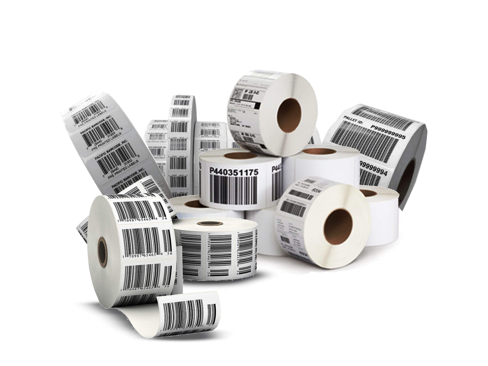
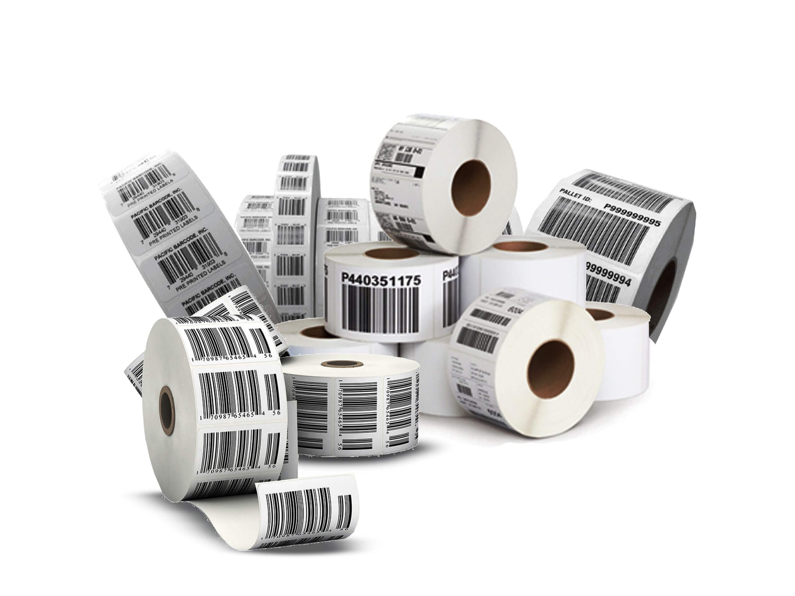
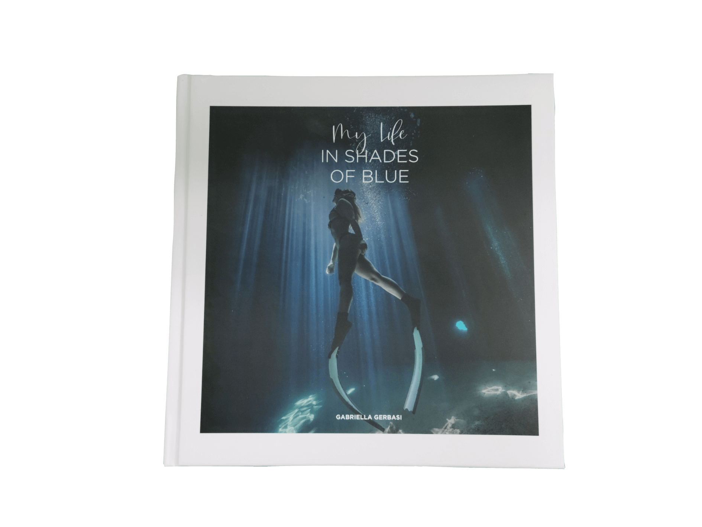
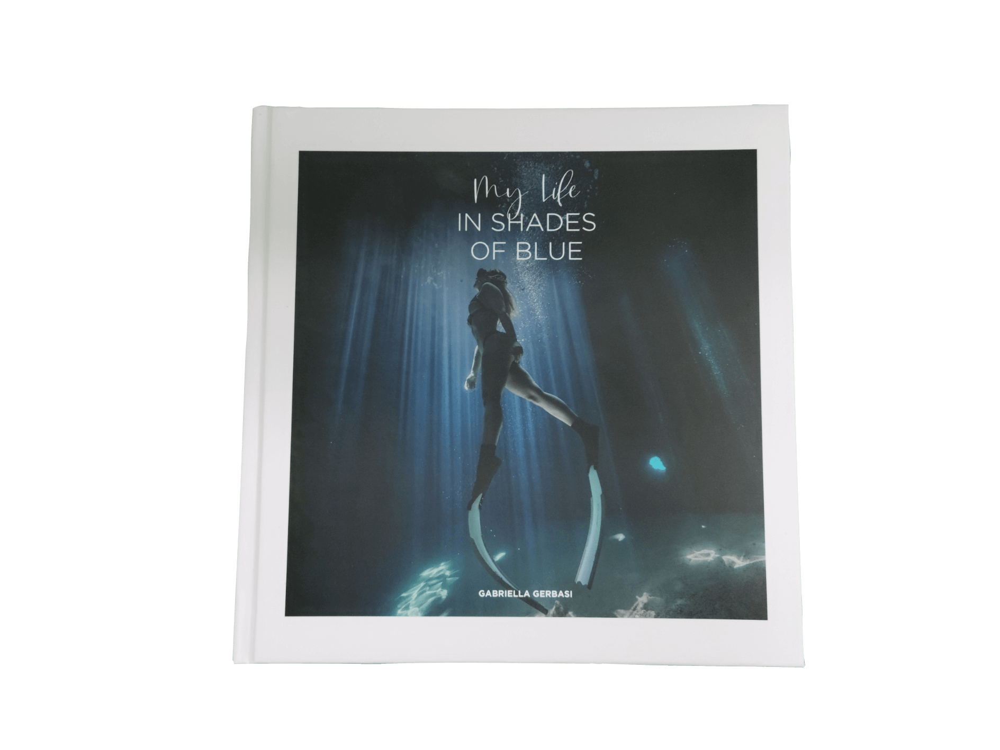

Designer
My work experiences
As a prepress graphic designer, I primarily worked with the Adobe suite. My skills focused on using software such as Photoshop, Illustrator, InDesign, and Acrobat. I gained experience in several companies, including:
SupremeX Inc. Lasalle
SupremeX is a company specializing in the manufacturing of envelopes, labels, and packaging. As a graphic designer, my responsibility was to create PDF proofs, calibrate colors, and retouch images and documents as necessary to ensure optimal print quality. I was also responsible for the quick and efficient production of flexographic and offset plates. My role was to maintain the company's quality and precision standards while utilizing effective techniques for optimal results.


IFLEX Labels (Fantasia) Saint-Laurent
Iflex (Fantasia) is a company specializing in the manufacturing of self-adhesive, digital, barcode labels, and flexible packaging. As a coordinator, I took responsibility for planning, coordinating, and supervising print projects, while ensuring print quality and managing relationships with external suppliers. I closely monitored print project progress and managed project files, ensuring that information was constantly updated.
 


CDN Print & Design Montreal
CDN is a company specializing in the manufacturing of business cards, brochures, and large format prints such as banners, posters, and other visual aids. As a graphic designer, my mission was to design and develop graphic designs for a variety of printed and digital projects. I was also responsible for the production of print projects, including cutting, lamination, binding, printing, and other related processes.


Accent Impression Saint-Laurent
Accent Impression is a company specializing in commercial printing, including business cards, brochures, flyers, catalogs, posters, signs, and promotional materials. My position involved designing graphic designs for printed products, preparing files for printing, including verifying the quality of images, resolution, and compliance with industry standards.
 
